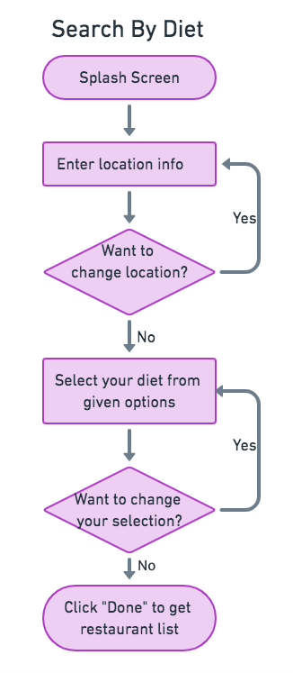
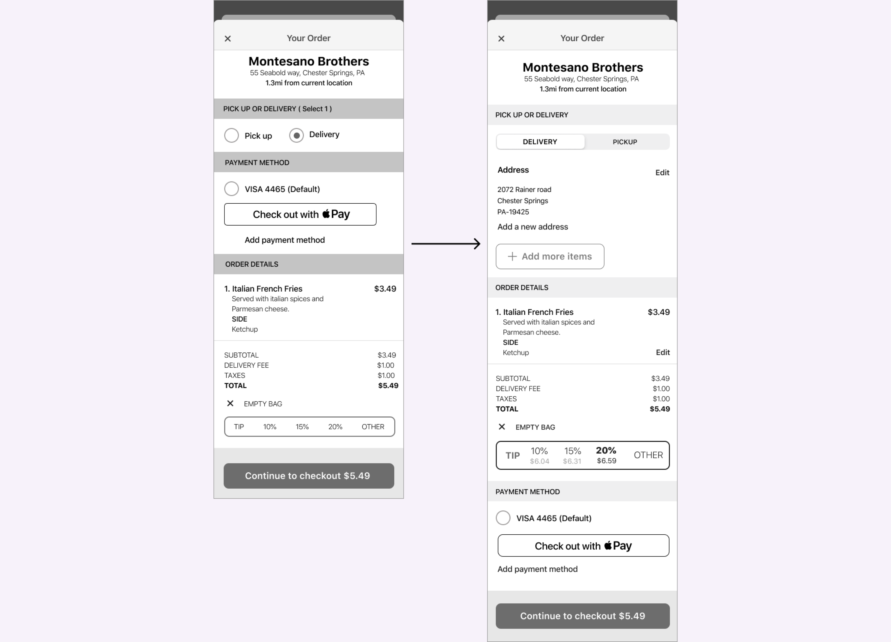

Choiz
UX Design | UI Design | Prototype
Choiz is an iOS app designed to help people with food restrictions/dietary preferences find restaurants that cater to their diet.
VIEW PROTOTYPEProblem
With increase in the number of people identifying themselves with one or more dietary restrictions, finding a restaurant that fits a person’s diet is a major challenge and can be frustrating. This is because most of the food centric apps provide very few dietary restriction filters even if a restaurants menu may have more options. For instance, an app will only have vegan or gluten free filters but may not have filters such as vegetarian, halal and kosher. Also, most restaurants that identify themselves as “diet friendly” may not have many food items for a specific dietary preference which may be misleading.
Solution
Choiz is an app that can help users explore restaurants based on their dietary restrictions. Users can just select their diet and enter their location to get a list of restaurants that meet their dietary preference. Users will be able to distinctly see the list of food items in a restaurant's menu that meet their dietary needs thus skipping the frustrating task of going through the entire menu to find the right food option. Once users find the right food option, they will also be able to make reservations or have their food delivered or available for pickup.
Process
User Survey
I started my research by conducting an online survey to better understand my end users. My focus was to understand the frustrations and challenges faced by people with dietary restrictions using food centric apps available today. I also wanted to understand additional features they may be expecting in such an app.
User Survey Analysis
- 60.7% participants had at least one dietary restriction / dietary preference.
- 62.1% participants said that online reviews and rating was the most important thing they considered when choosing which restaurant they wanted to dine in.
- 82.4% participants said that they checked a restaurant’s menu online before going to any restaurant.
- 52.5% participants said that not being able to identify which restaurants had food options for them was frustrating.
- 70% participants said that they ordered food for delivery/pickup at least once a month.
This information gave me an understanding of the user's expectations and frustrations and a clear idea to move forward with developing the concept of Choiz.
User Personas
Next I grouped the information I collected from my user research to create three user personas that represented my ideal customers. Each of these personas included needs, goals, and observed behavior patterns of my target audience.
VIEW PERSONASCompetitive Analysis
I then did a competitive analysis on three of my competitors Yelp, Happy Cow and Uber Eats to evaluate their strategies and identify their strengths and weaknesses. Some of my key takeaways were:
1. Yelp and UberEats have a very simple and user friendly UI, but does not allow users to make a selection based on dietary restrictions.
2. Happy cow has a friendly logo design and easy navigation. It also allows users to find food based on their diet. However its pages are too colorful and distracting. Another limitation with Happy Cow is that it only provides vegetarian, vegan and gluten-free filters.
User Flows
Next I created user flows for the high priority tasks using Draw.io. This helped me to evaluate the efficiency and simplicity of my design as well as optimize user experience. This detailed information architecture served as a template for the creation of the app’s MVP.
 VIEW USER FLOWSWireframes And Usability Testing
Then I created and tested low-fidelity wireframes. During the first round of usability testing users were asked to complete the following tasks : signing up for an account, selecting their diet, selecting a restaurant and placing a food order. Overall, all three users had a positive response with Choiz and were able to navigate the site smoothly. Below are two examples of feedback I received.
Test Result and Iterations
1. When users were signing up for an account, they suggested providing an option to skip signup.
2. For the task of placing a food order, users suggested adding an option to edit the order at any point in the order submission process.
Brand Story
During the branding phase, I wanted my product to not only have a catchy name but also a name that's related to my brand's purpose. Since the main purpose of my app was to help people find the right food options easily, I wanted my brand name to easily convey this message to users. After exploring several options, I decided to settle on the name “CHOIZ” as the name was simple and catchy and represented the main theme of my app that users always have a “choice” when it comes to their dietary preferences.
The next step was to choose the right logo. For this I started by initially sketching a few logo ideas on paper. Then, I created digital versions of my sketches to get a better feel of the logo before finally settling on a logo design that was perfect for my brand.
Color
I decided to go with green as my primary color mainly because green is a color that promotes the feeling of abundance. Considering my app provides people with dietary needs more options to the food of their choice, green was the apt choice. Also green is associated with energy, health, freshness, wellness and safety, thereby giving my app a fresh and reliable feel.
Typography
I decided to use Roboto font for my logo mainly because it matched well with the rest of the typefaces in my design. For the marketing page, I used Montserrat for the H1 text and Source sans Pro for the body text. For the iOS app, I decided to stick with SF pro in alignment with iOS’ default typeface.
Logo Design
Before finalizing the logo, I performed a preference test to verify whether my users preferred the logo with a fork or a logo with a spoon. Based on the preference test results, I decided to move ahead with the logo with a spoon.
Hi-Fi Mockups And Preference Testing
Now that my color, typography and logo had been finalized, I started to work on my high fidelity mockups using the Figma tool. I also conducted a quick preference test to decide what button needed to be used when users placed a food order. Apart from this I also checked to see how users wanted the delivery/pickup option to be displayed.
Preference Test Results
Usability Testing and Visual Design
Next I created a prototype that was used for the second round of usability testing. This time I asked my users to mainly focus on the visuals and the UI elements as I wanted to test my branding. Below are two examples of the test results:
Usability Test Results
Result 1: For the task to ‘rate and write a review’, users were confused where most users clicked on the stars instead of the review link. In order to reduce this confusion, I removed the stars and provided additional text in the link.
Result 2: In the restaurant detail screen, users felt that the sub-navbar looked different from the rest of the design, so I improved this section by using icons instead of sub-navbar.
Final Design
After updating my design based on the results of the usability testing, I had my final design reviewed by my team members at the Thinkful community and my mentor. The feedback I received from them was invaluable. Also, focusing on what users wanted from Choiz and letting them influence the overall design made the app a user friendly, intuitive and an impactful product.
VIEW PROTOTYPETakeaways
I think my biggest takeaway from this project was realizing the importance of conducting usability tests as well as preference tests at every stage of my process. This helped me save time as well as helped improve the design. I also learned how to implement modern practices and techniques to create great experiences for users.